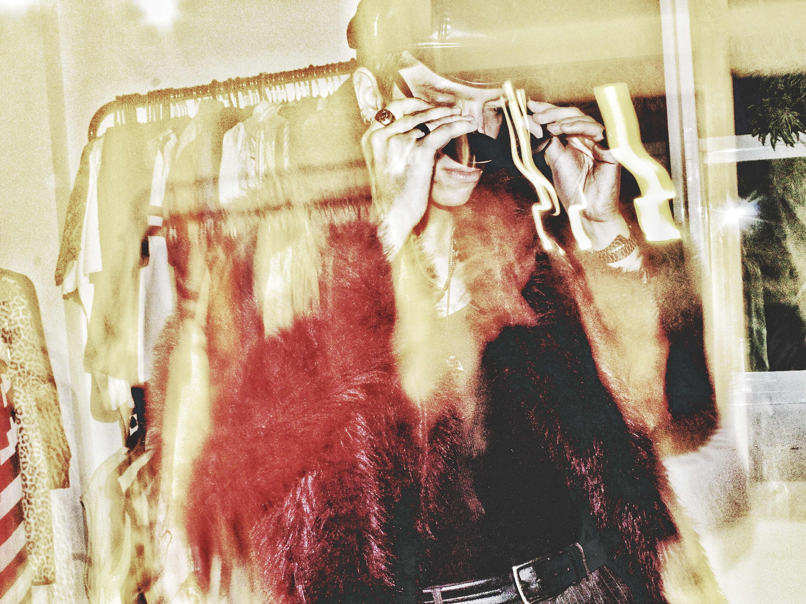
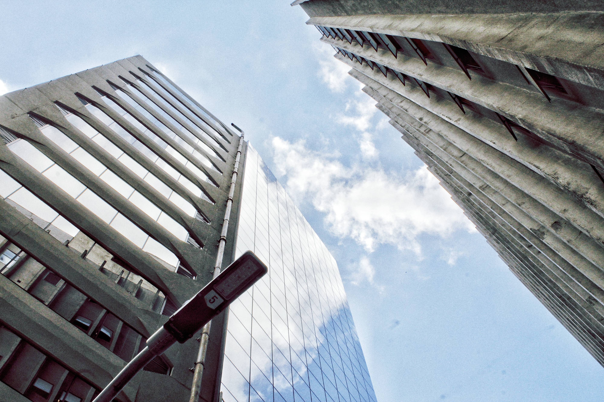
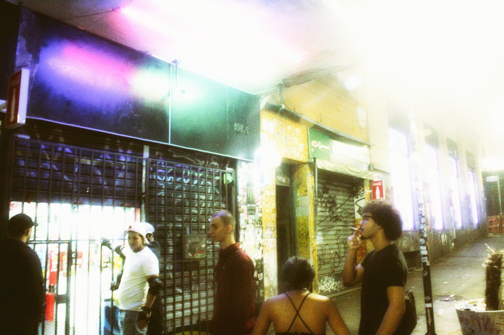
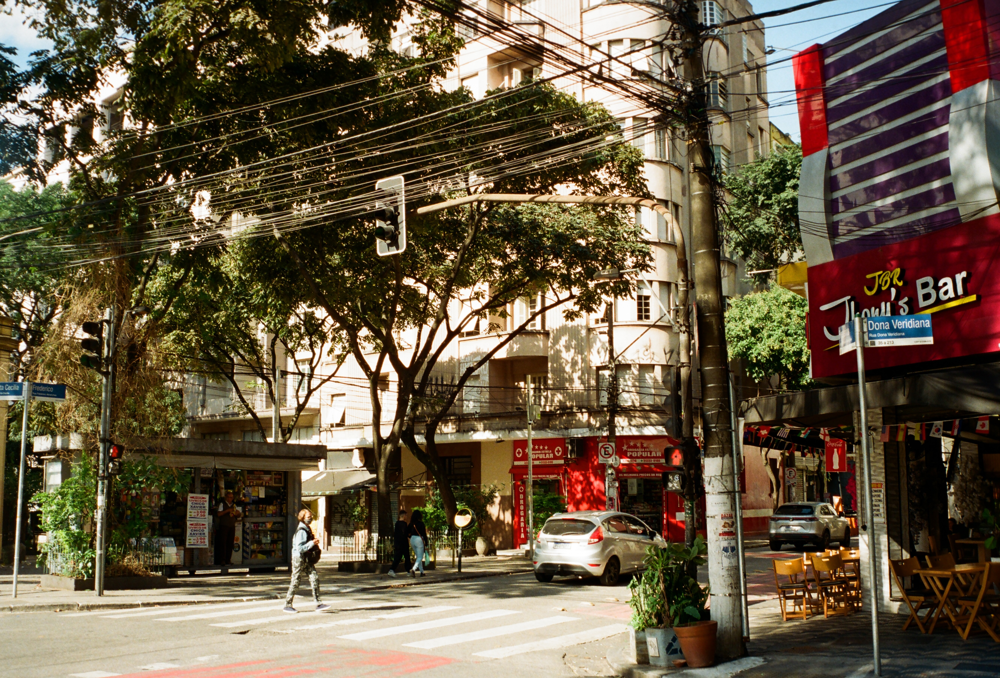
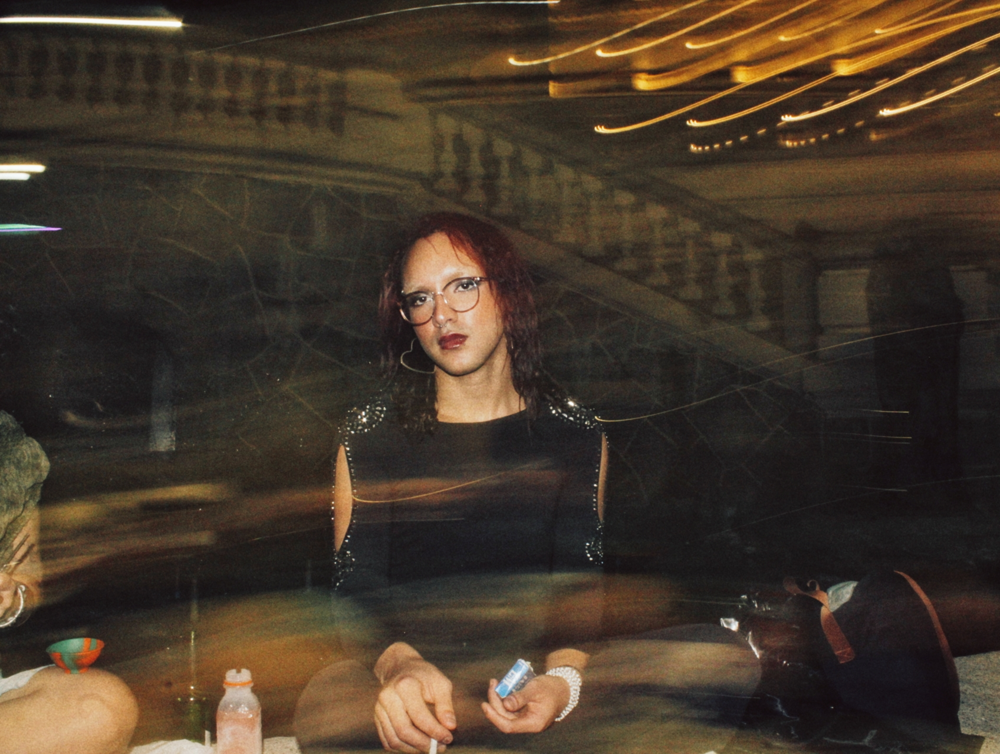
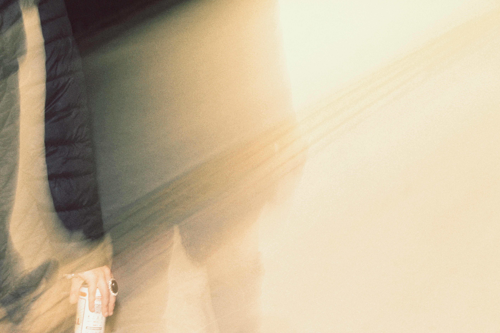

Meu trabalho
Uma seleção de histórias, pessoas e lugares registrados através do meu olhar.
Processos e estudos
Gabriel Molina
Um ensaio de retrato pensado para explorar presença, expressão e personalidade através de uma abordagem minimalista.

IMS — Av. Paulista
Um registro do espaço, da arquitetura e das experiências que atravessam o Instituto Moreira Salles na Avenida Paulista.

Showcrazy — Centro Histórico
Um registro de música, presença e movimento realizado no Centro Histórico, acompanhando a atmosfera do show e seus momentos.

Novo Análogo
Meu segundo filme analógico, feito com Fujifilm ISO400 e a câmera Photura 135 — um processo de peso emocional e gratificante.

J & B
Um encontro com minha amiga Juliana e sua namorada Bianca na Praça Ramos de Azevedo, no Anhangabaú, mais um dos nossos rolês despretensiosos e nostálgicos.

Conjunto Cultural
O Conjunto Cultural é um espaço que reúne artistas e criadores de diversas áreas, promovendo a troca de ideias e a valorização da cultura na cidade de São Paulo.

Manifestação Pró Lula
Ato que ocorreu no dia 24.10.2026. Um dia antes do 2⁰ turno das eleições, com estimativa de mais 2M de manifestantes ocupando a Av. Paulista em São Paulo. Um ato um democrático que entrou pra história das eleições presidenciais do Brasil.
Mais histórias em breve.